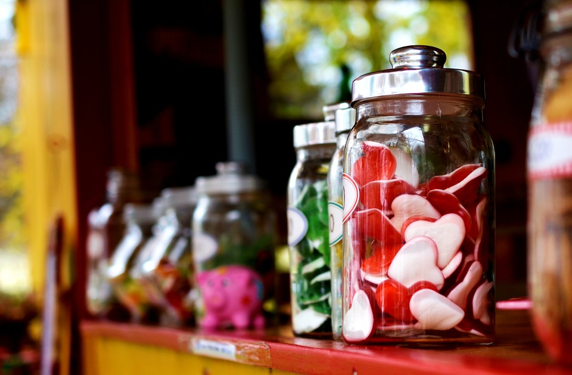

Picture 1
Picture 1
It is a long established fact that a reader will be distracted by the readable content of a page when looking at its layout.
Picture 2
It is a long established fact that a reader will be
distracted by the readable content of a page when looking at its layout.

Picture 3
It is a long established fact that a reader will be distracted by the readable content of a page when looking at its layout.